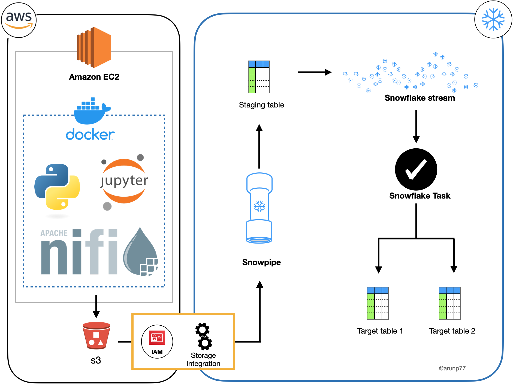
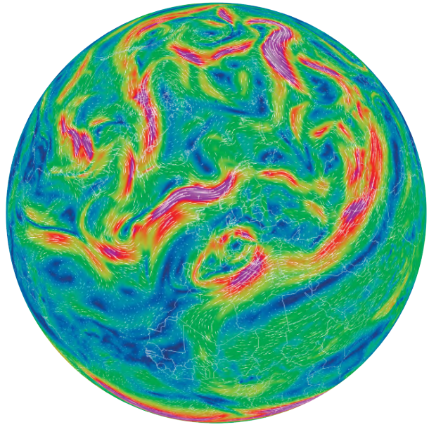
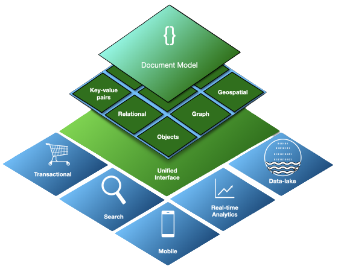
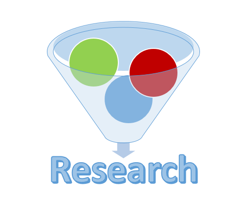

01 · Satellite operations
Satellite log monitoring and ETL
A monitoring workflow for operational satellite processing, connecting log ingestion, transformation, investigation, and quality-oriented analysis.
Explore the systemEarth Observation Data Engineer
I combine scientific thinking with production data engineering to build satellite-processing workflows, quality systems, and analytics platforms.
Darmstadt, Germany
Profile
I am an astrophysicist turned data engineer, working at the intersection of Earth observation, scientific computing, and dependable data systems.
My background spans international research, satellite data-product validation, ETL pipelines, APIs, and analytical platforms. I enjoy translating complex physical and operational requirements into systems that are testable, observable, and useful.
Selected work
A focused selection of systems, experiments, and technical knowledge drawn from a broader project library.

01 · Satellite operations
A monitoring workflow for operational satellite processing, connecting log ingestion, transformation, investigation, and quality-oriented analysis.
Explore the system
02 · Earth observation
An applied collection covering satellite instruments, orbits, radiative transfer, atmospheric products, and data-processing workflows.
Visit the platform
03 · Data platforms
Practical work across APIs, databases, cloud platforms, streaming, orchestration, containers, and validation.
View data engineering work
04 · Scientific computing
Numerical and analytical work on primordial magnetic fields, gravitational waves, plasma dynamics, and the early universe.
Explore research projectsCore expertise
Tools change. The ability to understand a system, trace its data, and make it reliable is the durable skill.
Level 0–2 meteorological products, remote sensing, radiative transfer, multidimensional data, anomaly investigation, and product validation.
ETL/ELT design, APIs, data warehouses, orchestration, streaming, observability, and reproducible processing environments.
Python, numerical modelling, statistics, Monte Carlo methods, machine learning, time-series analysis, and research-grade documentation.
Linux, Docker, Kubernetes, AWS, Snowflake, CI/CD, automated testing, verification, validation, and technical investigation.
Python · SQL · Bash · FastAPI · Flask · PostgreSQL · Elasticsearch · NiFi · Kafka · Airflow · Docker · Kubernetes · AWS · Snowflake · Git
Professional journey
A career shaped by research questions, international collaboration, and the engineering needed to turn data into dependable evidence.
EUMETSAT environment · Darmstadt
Supporting verification, validation, and anomaly investigation across Earth-observation satellite processing from Level 0 through Levels 1 and 2.
Mainz, Germany
Built APIs, analytical applications, containerized ETL workflows, and data platforms using Python, FastAPI, Elasticsearch, NiFi, and Snowflake.
India · China · Germany
Investigated cosmology, magnetized plasma, gravitational waves, and thermal signatures through analytical and computational research.
IIT Gandhinagar · Physical Research Laboratory
Researched the origin and dynamics of primordial magnetic fields in parity-violating plasma.
Selected research
Research spanning gravitational waves, cosmic magnetism, plasma physics, and the thermal history of the universe.
2026 · First author
Arun Kumar Pandey, Subalakshmi A, Sampurn Anand
Read on arXiv2022 · First author
Arun Kumar Pandey, Sunil Malik
Read on arXiv2021 · First author
European Physical Journal C 81, 399
Read on arXivCredentials
IIT Gandhinagar / Physical Research Laboratory · 2017
One of 15 candidates selected nationwide in the April 2019 cycle.
All India Rank 33 · Physics · 2011
ETL, data platforms, cloud systems, APIs, containers, and orchestration · 2024
Start a conversation
Open to technical collaboration, research conversations, and opportunities where science meets production engineering.